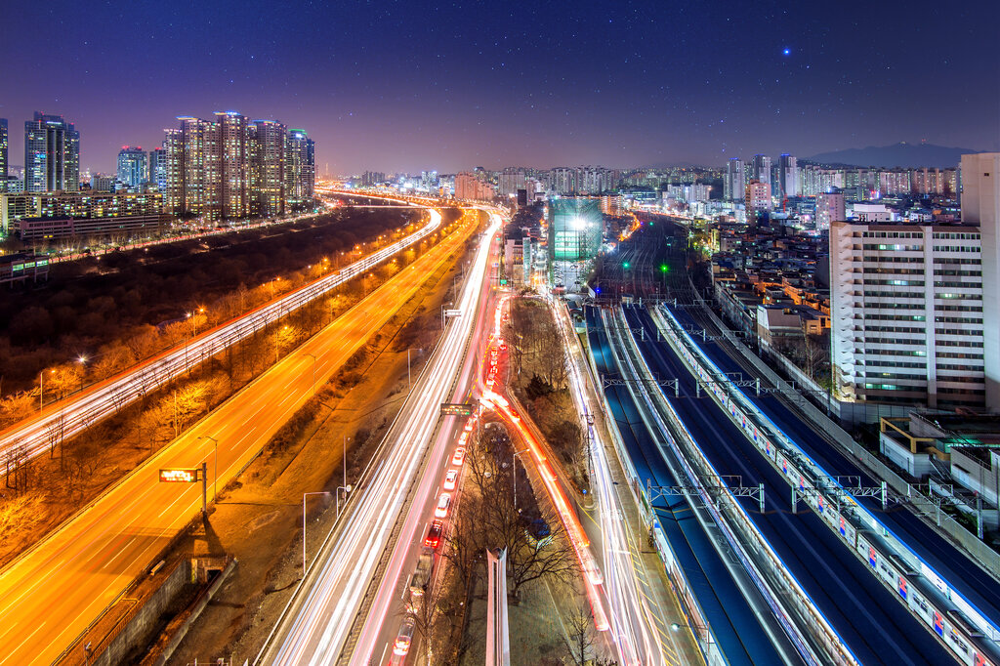
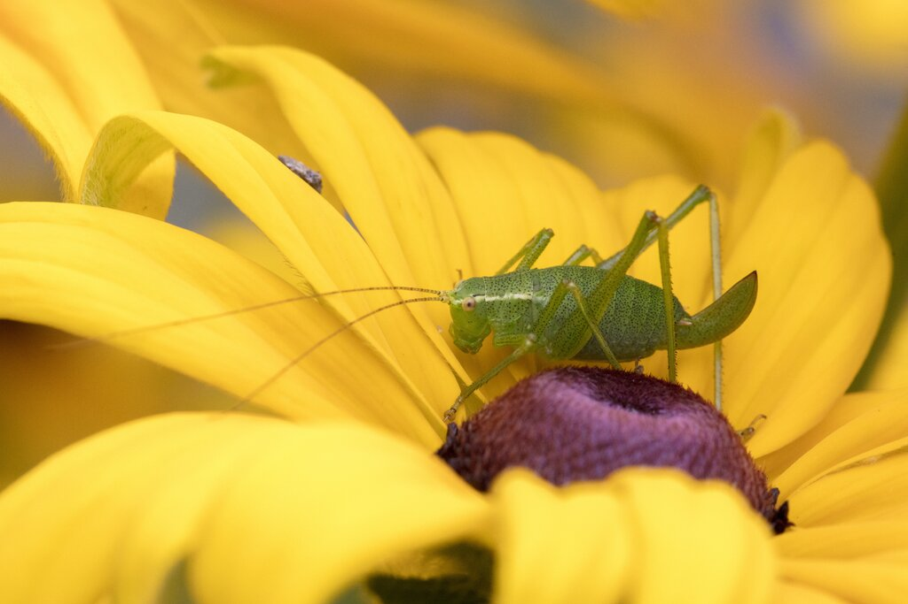
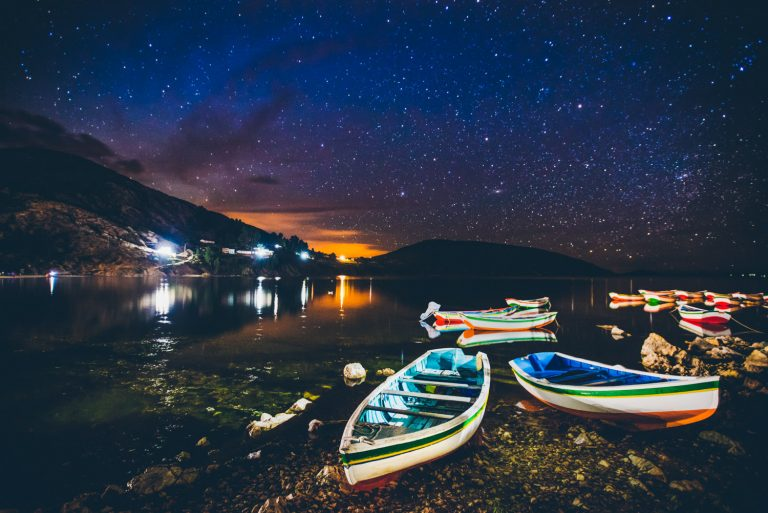
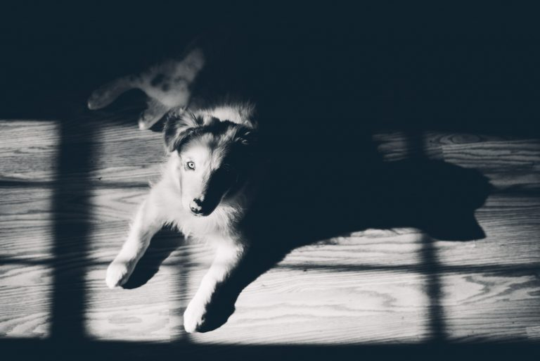
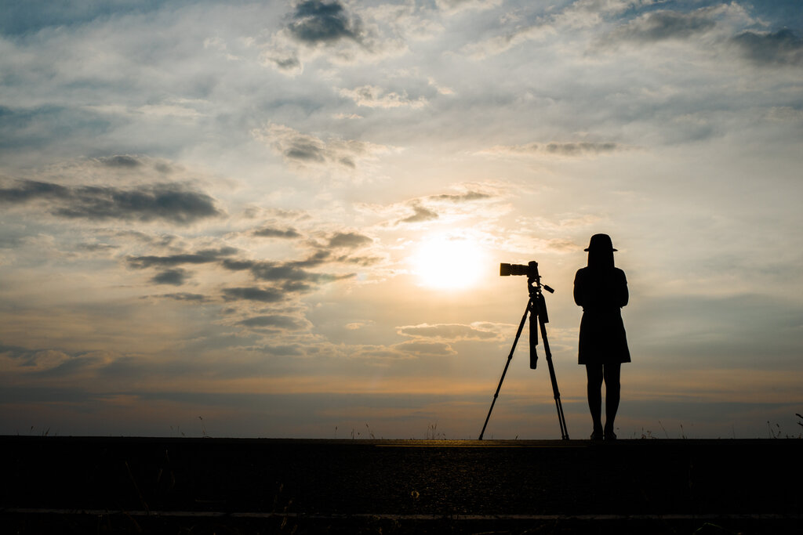

Menjadi Fotografer Hnadal Hanya Dalam Waktu Seminggu
Tertarik dengan dunia fotografi dan baru menekuninya akhir-akhir ini? Jika ya, penting bagi kamu memahami beberapa teknik fotografi untuk pemula supaya mendapatkan hasil foto yang memuaskan.
Bagi pemula, dunia fotografi terlihat sangat abu-abu. Mungkin, ia mengetahui bahwa fotografi hanya sekadar menjepret gambar dengan memilih angle yang bagus.
Padahal, fotografi tidak sesederhana itu. Ada beberapa teknik yang perlu diketahui supaya hasil foto bisa bervariatif.
Apa saja kira-kira tekniknya? Dalam artikel ini Glints akan menjelaskannya satu per satu.

Sudah pernah mendengar teknik yang satu ini? Long exposure adalah salah satu teknik fotografi yang wajib kamu pelajari, utamanya bagi seorang pemula.
Melansir Creative Live, teknik fotografi yang satu ini harus dikuasai dengan baik oleh seorang fotografer.
Pasalnya, long exposure akan menghasilkan foto yang unik dan menarik.
Seperti apa, sih, teknik long exposure itu? Pada dasarnya teknik ini memanfaatkan shutter speed yang lambat untuk memotret objek yang bergerak.
Mengapa pakai shutter speed yang lambat? Sebab, cara tersebut dapat mengumpulkan cahaya pada kamera untuk waktu yang lama.
Teknik ini cocok digunakan saat mengambil objek aliran sungai yang bergerak, bintang di langit, jalan raya, dan sebagainya.

Melansir Exposure Guide, teknik makro adalah teknik fotografi dengan mengambil gambar agar terlihat lebih besar.
Biasanya, fotografi makro akan memperlihatkan objek gambar terlihat sangat dekat atau close up.
Foto yang dihasilkan biasanya memiliki ukuran rasio 1:1.
Uniknya, teknik foto ini tidak memakai alat bantu seperti mikroskop agar objek terlihat lebih dekat.
Fotografer hanya menggunakan kamera mirrorless atau DSLR dengan lensa jarak fokus makro 50mm-200mm.
Pernah melihat gambar binatang seperti capung atau kupu-kupu yang terlihat jelas? Nah, biasanya itu diambil dengan menggunakan teknik makro.
Teknik fotografi ini wajib dipelajari oleh pemula untuk mendapatkan objek yang terlihat jelas dari dekat.

Teknik fotografi lainnya yang harus dipelajari oleh pemula adalah light painting.
Dilansir dari Digital Photography School, teknik light painting adalah teknik fotografi yang menggunakan sumber cahaya lain, seperti senter, untuk menambahkan cahaya pada objek yang akan diambil.
Teknik ini memang cukup sulit untuk dilakukan. Setidaknya, hal-hal yang harus dipersiapkan adalah tripod dan senter.
Letakkan kamera di tripod, lalu cari tempat-tempat yang gelap. Setelah itu, kreasikan lukisan cahaya sebaik mungkin sesuai dengan seleramu.
Pastikan gunakan aperture yang moderat, yaitu kisaran antara f/4 hingga f/8. Lalu, gunakan eksposur yang cukup lama, yaitu 15-30 detik.

Teknik yang satu ini mungkin pernah kamu gunakan. Bagi pemula, teknik fotografi black & white dinilai dapat diterapkan dengan baik secara perlahan-lahan.
Terlebih, apabila kamu mempunyai kamera mirrorless atau DSLR.
Sebab, biasanya dalam kamera tersebut terdapat pengaturan warna yang bisa diubah menjadi black & white.
Setelah itu, kamu bisa mengambil gambar terlebih dahulu untuk mendapatkan gambar hitam putih.
Jika ingin hasil yang lebih memuaskan, mungkin kamu bisa mengedit hasil fotonya dengan Adobe Photoshop atau Lightroom.

Di antara kamu, pasti pernah mendapatkan hasil foto siluet karena menutupi cahaya. Sama seperti namanya, siluet artinya objek yang dihasilkan hanya berupa bayangan.
Kamu bisa menjadikan objek teknik siluet berbagai macam, seperti manusia atau action figure.
Biasanya, waktu yang tepat untuk mendapatkan foto siluet adalah saat matahari terbenam.
Itu dia lima teknik fotografi yang wajib dipelajari oleh seorang pemula.
Teknik-teknik di atas akan membantumu untuk mendapatkan hasil foto yang bervariatif sehingga dapat di-upload di media sosial atau dijadikan sebagai portofolio.